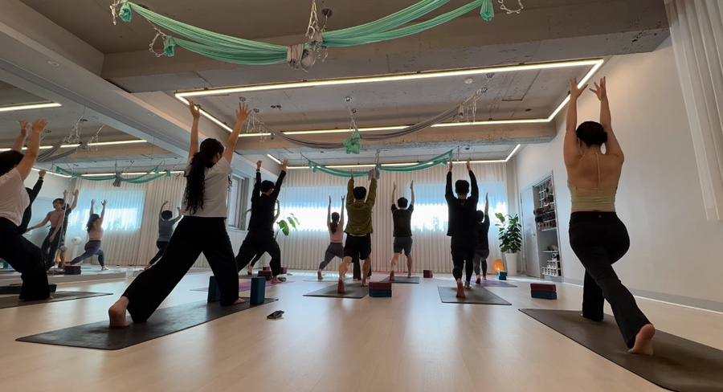

계단을 올라오면서 핸드폰을 확인했어요.
네이버 예약 확인 알림. 오늘 오후 7시, 하타플로우 체험수업.
솔직히 말하면 며칠 전에 대전 빈야사 수업을 검색해서 예약하려다가 망설였어요.
유튜브에서 본 빈야사 영상은 너무 빠르고, 동작이 계속 이어지니까
'저걸 따라가다 쓰러지는 거 아냐?' 싶었거든요.
그때 원장님한테 메시지를 드렸더니
"요가가 처음이시면 하타플로우부터 시작해보는 게 좋을 것 같아요" 라고 하셨어요.
솔직히 하타플로우라는 이름도 그날 처음 들었습니다.
하타플로우가 뭔가요? 빈야사랑 뭐가 달라요?
스튜디오에 도착해서 처음 여쭤봤어요.
수업 시작 전에 원장님이 차를 내주시면서 간단하게 설명해주셨어요.
한 마디로, 빈야사는 '흐름'이 주인공이고, 하타플로우는 '자세'가 주인공이에요.
빈야사에서 각 동작이 1~2초라면, 하타플로우에서는 5~8호흡씩 자세를 유지해요.
그 시간 동안 몸 안에서 어떤 일이 일어나는지를 느낄 수 있거든요.

첫 동작 — 그냥 서 있는 것도 요가예요
매트 위에 서서, 눈을 감고, 숨을 들이쉬었어요.
첫 동작은 산 자세(타다아사나)였어요.
그냥 서 있는 자세예요. 근데 원장님이 조용히 말씀하셨어요.
"발바닥 네 모서리를 땅에 고르게 눌러보세요.
허벅지 앞쪽을 살짝 당기고, 꼬리뼈는 아래로."
아무것도 안 하는 것처럼 보이는 자세에서
이렇게 많은 일이 동시에 일어나고 있었다는 걸 처음 알았어요.
평소에 얼마나 대충 서 있었는지도요.
그 다음은 양팔을 천천히 들어올리고, 숨을 내쉬며 앞으로 접는 전굴 자세.
또 5호흡 유지. 허리 뒤쪽이 당기면서 뭔가 열리는 느낌이 났어요.
유지하는 게 이렇게 힘들 줄 몰랐어요
전사자세 1번을 유지하면서 5호흡을 세고 있는데,
허벅지가 떨리기 시작했어요.
빠르게 넘어가면 안 떨렸을 텐데,
머물러 있으니까 오히려 더 많은 게 느껴지는 거예요.

그 타이밍에 원장님이 등 뒤로 오셔서 어깨를 살짝 열어주셨어요.
뭔가 조금 더 앞이 보이는 느낌.
"맞아요, 그렇게요"라고 하셨는데, 그 말이 꽤 오래 기억에 남을 것 같아요.
하타플로우에서는 이런 순간이 자주 있었어요.
빠르게 지나가지 않기 때문에, 원장님도 제 자세를 볼 시간이 있고
저도 내 몸을 느낄 시간이 있고요.
💛 처음 요가 수업에서 가장 인상 깊었던 동작이 있으셨나요? 인스타 @sara_yoga_studio 에 댓글로 남겨주시면 다음 글에서 꼭 다뤄볼게요.
수업 후 — 발이 땅에 닿는 느낌이 달랐어요
마지막 사바아사나 자세로 매트에 누웠을 때,
온몸이 바닥으로 스며드는 느낌이 났어요.
긴장이 풀리는 게 느껴지는데 잠드는 건 아닌, 그 사이 어딘가.
수업 끝나고 신발 신으면서 발바닥이 땅에 닿는 감각이 달랐어요.
매번 이런 건지 여쭤봤더니 원장님이 웃으시면서 이러셨어요.
"처음에 다들 그 느낌에 다시 오세요."

서대전네거리역에서 도보 2분, 대전 중구 오류동
4번출구로 돌아나오면서 핸드폰을 꺼냈어요.
다음 수업 예약하려고요.
사라요가는 대전 중구 오류동, 서대전네거리역 4번출구에서 걸어서 2분이에요.
퇴근 후 지하철에서 내리면 그냥 걸어올 수 있어요.
계룡로 874번길 18, 3층 — 엘리베이터 타면 금방이에요.
하타플로우는 대전 빈야사 수업이 어렵게 느껴졌던 분들께 특히 추천드려요.
속도보다 감각이 먼저인 요가거든요.
첫 수업은 무료예요. 몸으로 한 번 느껴보세요. 🌿